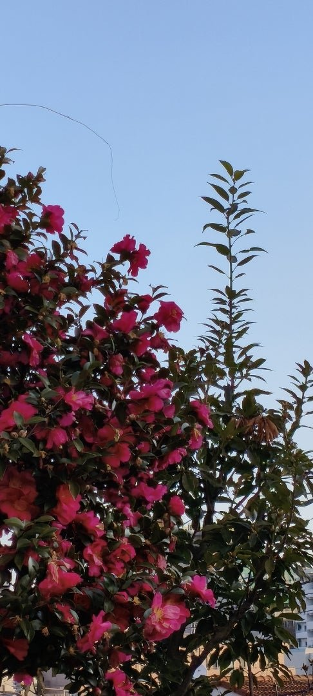
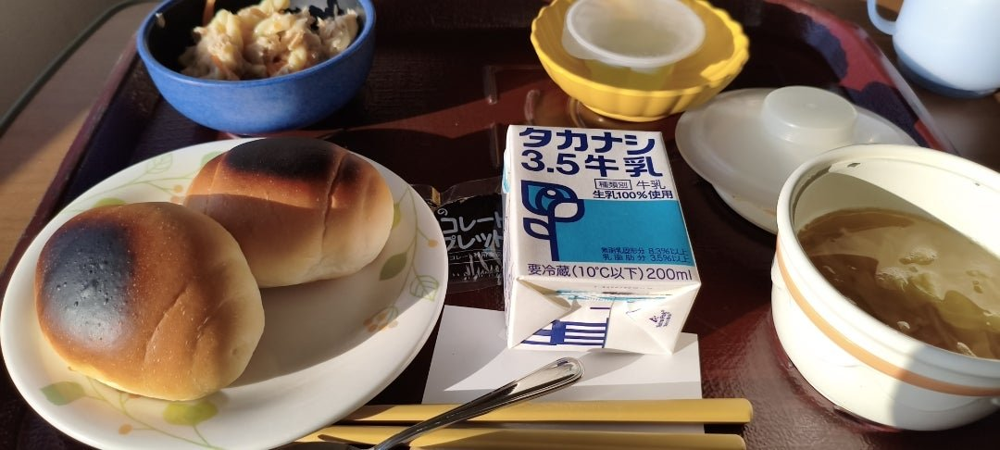
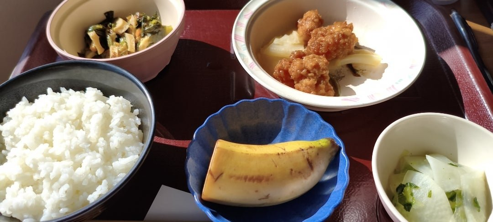
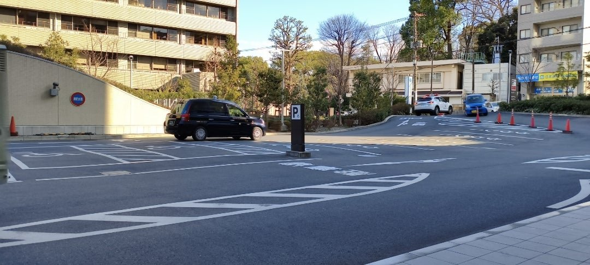

右膝 人工関節手術10日目
手術後初めてのシャワー浴びれる。体がそろそろ臭いのわかる……💦
最初だからということで看護師さんが支援してくれるようです。若くて可愛い看護師さん。チョット恥ずかしいですが規則なので仕方ない……💖
朝ごはんロールパンを焦がした。

昼ごはんはチキンマリネとても美味しいです😊

午前中は曲げ伸ばし器具リハビリ運動1時間
角度は115度MAXが120度なのだがもうかなり目一杯です。腫れが酷く曲げるのが限界に来ています。

でもこれをやらないとヒザが固まってしまい血栓が出来るので毎日1時間やらなくてはなりません。夕食の後は髪の毛サラサラのお薬も飲んでいます。あ、血液サラサラでした……💦

羽田までタクシーで移動するためTwitterのフォロワーさんに連絡をとり、快く応じて頂きました。
何度もお会いしていて優しくて礼儀正しい紳士です。
今日も玄関前に来たようでしたがリハビリ中で慌てて車椅子で下におりましたが間に合わずお会いできませんでした……。残念😞
※ この記事はアメブロからの移行記事です（原文はこちら）